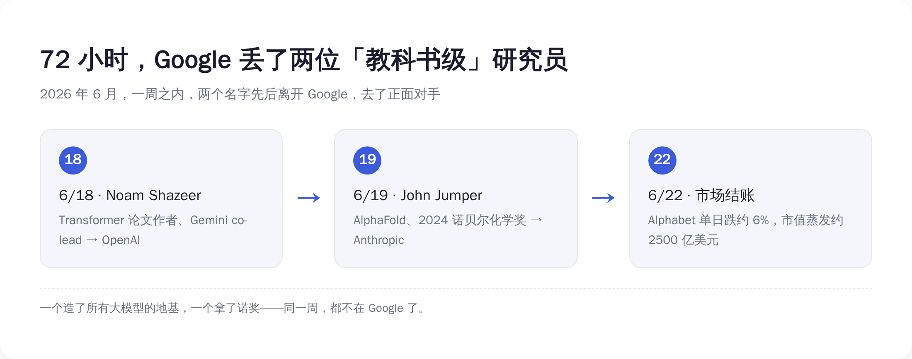
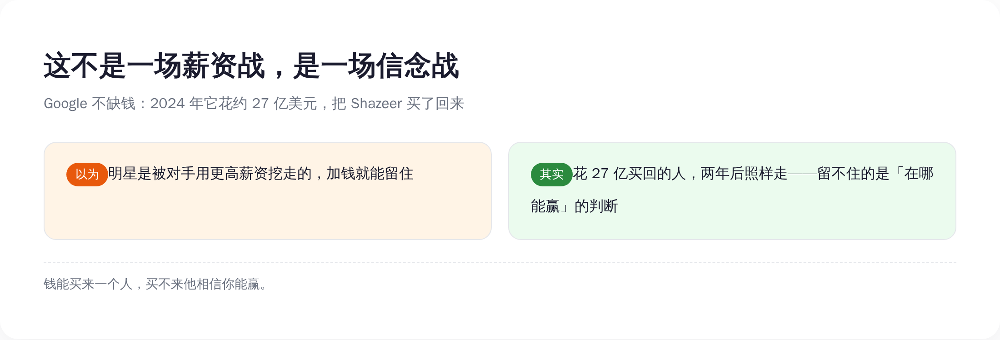
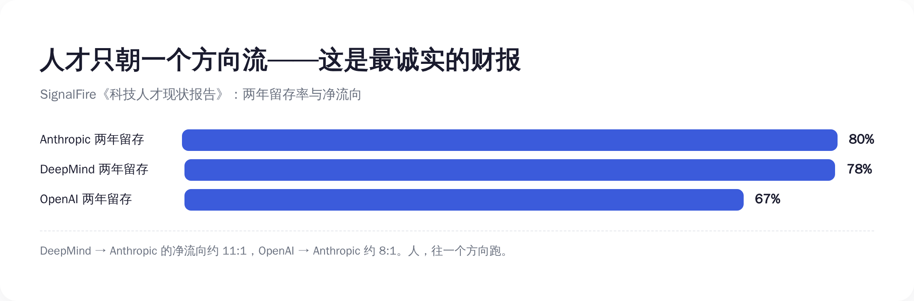

一周内走两个，分量是「教科书级」的
先把这两个人的分量说清楚，不然你体会不到 Google 这一刀有多疼。
第一个，Noam Shazeer。
2017 年，8 个 Google 员工合写了一篇论文，标题很狂——《Attention Is All You Need》（注意力就是你需要的全部）。这篇论文提出的 Transformer 架构，是今天整个生成式 AI 的地基。没有它，没有 ChatGPT，没有 Gemini，没有 Claude，没有这三年所有的故事。
Shazeer 是这 8 个作者之一。后来他出去创业做了 Character.AI，2024 年，Google 花了大约 27 亿美元，把他和他的团队又买了回来，让他去 co-lead（联合领导）最重要的 Gemini 项目。
27 亿。买一个人回来带队。
两年不到，他走了。去了 OpenAI。
第二个，John Jumper。
他是 AlphaFold 的核心作者。AlphaFold 干了一件事：用 AI 预测蛋白质的三维结构。它把人类已知的 2 亿多个蛋白质结构全算了出来，免费开放给全球科学家，覆盖了地球上几乎每一种已知蛋白质。
这件事的分量，2024 年诺贝尔化学奖给了答案——Jumper 和他的老板 Demis Hassabis 一起拿了奖，获奖理由是「蛋白质结构预测」。
在 Google DeepMind 干了快 9 年，拿了诺奖。这周，他走了。去了 Anthropic。
兄弟们感受一下这个密度——
一周之内，Google 丢了一个 Transformer 作者，和一个诺奖得主。
这不是「人员流动」，这是地基级别的人在搬家。

Google 的悖论：发明了一切，却留不住发明它的人
这才是整件事最荒诞的地方。
Transformer，Google 发明的。AlphaFold，Google 发明的。
可你看看今天 AI 圈的格局——
最火的 ChatGPT，是 OpenAI 的，用的是 Transformer。 口碑最好的 Claude，是 Anthropic 的，用的是 Transformer。 连 Google 自己的 Gemini，也是 Transformer。
Google 发明了一把枪，结果全世界都拿这把枪在跟它对射。
更扎心的是人。
那篇《Attention Is All You Need》8 个作者，到今天，一个都不在 Google 了。全走光了。有人去创业，有人去了对手公司。Shazeer 是其中相对晚走的一个——他还被 Google 花 27 亿买回来过一次——这周，连他也走了。
发明 Transformer 的实验室，留不住任何一个 Transformer 的作者。
这是一种很特殊的失败。Google 不是没做出东西，恰恰相反，它做出了这个时代最重要的东西。它只是留不住做出这些东西的人。
兄弟们，技术可以是你发明的，但技术的红利，是跟着人走的，不是跟着公司走的。
一个研究员的脑子里装着「下一个 Transformer」可能长什么样。他走到哪，这个可能性就到哪。他从 Google 走到 Anthropic，那个未来就从 Google 挪到了 Anthropic。
发明的功劳记在 Google 账上，发明的未来兑现在对手账上。这就是 Google 现在的处境。
生成 Prompt
A large tree heavy with golden fruit, but hands reaching in from outside the frame are picking the fruit and carrying it away to two smaller buildings in the distance, flat design, minimalist illustration, tech style, blue and white color palette with warm gold accents, conceptual metaphor of invention being harvested by others, no text, no labels, clean white background
钱不是答案：花 27 亿买回的人，照样走
很多人第一反应是：肯定是对手出了更高的价。挖人嘛，加钱就完了。
兄弟们，这个解释，被一个数字直接打穿了——
27 亿美元。
这是 2024 年 Google 为了把 Shazeer 买回来花的钱。这不是年薪，这是把他和团队整个「买」回来的代价。这种价码，全世界没几家公司付得起，Google 付了。
结果呢？两年不到，人走了。
如果加钱能解决问题，27 亿应该够了吧？
不够。
因为这从来不是一场薪资战。这是一场信念战。
顶级研究员到了 Shazeer、Jumper 这个段位，钱对他们来说早就过了「改变生活」的门槛。他们再做选择，看的不是哪里给的多，是哪里能让他做出下一个诺奖级的东西，是哪里相信、并且有能力，赢下 AGI 这场仗。
Google 给得起钱，但它给不了那个判断。
在一个研究员眼里，Google 是一家什么都做、广告养着一切、AI 只是其中一块业务的巨型公司。而 OpenAI、Anthropic 这种地方，整个公司就是为 AGI 这一件事而生的，没有别的业务分心，决策快，下注狠。
你是那个研究员，你押哪边？
所以你看，Google 真正的问题，不是钱包不够厚，是它没法让最聪明的人相信「赢的是我」。
钱能买来一个人的时间，买不来他赌你能赢。

人才只朝一个方向流——这才是最诚实的财报
如果只是走两个人，还可以说是偶然。
但有一组数据，把「偶然」两个字也撕了。
一家专门追踪科技人才流动的机构 SignalFire，发了一份《科技人才现状报告》，里面有几个数字，比任何财报都诚实——
两年留存率： Anthropic 80%，DeepMind 78%，OpenAI 67%。
净流向，这才是关键：
- 从 OpenAI 跳去 Anthropic 的人，是反方向（Anthropic 跳去 OpenAI）的约 8 倍。
- 从 Google DeepMind 跳去 Anthropic 的人，比例约为 11:1。
11 比 1。
意思是，DeepMind 和 Anthropic 之间，每有 1 个人从 Anthropic 跳到 DeepMind，就有大约 11 个人反向跳过去。
兄弟们，这不是流动，这是单向漏水。
这个数字的可怕，在于它的方向性。人才市场如果是健康的，流动应该是双向的——你挖我的人，我也挖你的人，大家互相流。但 11:1 不是流动，是逃逸。它说明在这群最懂行的人心里，已经形成了高度一致的判断：那边更值得去。
而且最懂 AI 的，恰恰就是这群人。他们不是看新闻做判断，他们自己就是新闻。他们用脚投的票，比任何分析师的研报都准。
这就是为什么我说，人才流向是 AI 公司最诚实的财报。
营收会滞后，benchmark 能调，市值有情绪。只有顶级研究员往哪走，是骗不了人的——因为他们赌上的是自己的职业生涯，没人会拿这个开玩笑。
Google 这周丢的不是两个人。是这张「人才流向表」上，又重重记了一笔：净流出。

顶级人才为什么往「小厂」跑
讲到这里有个反常识的地方：钱多、资源多、算力多、品牌响的 Google，反而在往外漏人；而 Anthropic 这种成立没几年的公司，反而是人才的黑洞。
为什么？
我个人感觉，有三个原因，而且都跟「钱」无关。
第一，专注。
Anthropic、OpenAI 这种公司，整个组织就为 AGI 一件事而生。一个研究员进去，他的工作和公司的命运是直接挂钩的——他做出突破，公司就往前一步。这种「我的工作直接决定公司生死」的感觉，是巨型公司给不了的。在 Google，AI 做得再好，也只是财报里的一行，上面还压着搜索、广告、云、安卓一堆业务。
第二，自主权。
SignalFire 那份报告里点了一句很关键的话：Anthropic 留人靠的不是钱，是「不搞职级政治、不强推管理路线、给研究员真正的自主权」。
翻译成人话——在那里，一个厉害的研究员可以一直做研究、一直往深里钻，而不用为了升职被迫去管人、去开会、去搞政治。对真正热爱这件事的人来说，这比钱诱人得多。大公司最擅长的，恰恰是把一个天才研究员，慢慢变成一个开不完会的中层。
第三，下注的胆量。
小公司敢 all in，敢把全部筹码押在一个方向上。大公司什么都想要，反而什么都押不重。在一个相信「AGI 几年内会发生」的研究员眼里，他要找的是一张能让他下重注的牌桌——而不是一个什么都做、什么都浅尝辄止的自助餐厅。
兄弟们注意，这三条，Google 一条都补不了。
不是 Google 不努力，是它的体量本身就是诅咒。它太大了，大到没法让一个研究员相信「公司的命运和我这一行代码有关」。
这也解释了为什么这次特别疼——留下来的人里，连 Demis Hassabis（Jumper 的诺奖搭档）这种顶级人物还在掌舵 DeepMind，但和他一起拿奖的人，已经走了。连诺奖搭档都留不住，剩下的人会怎么想？
人才流失最可怕的不是走的那个人，是还没走的那些人，开始重新算账。
生成 Prompt
A wide river of tiny human figures all flowing in one single direction, from a large grey corporate tower toward two glowing smaller buildings, the current is strong and one-directional, flat design, minimalist illustration, tech style, blue and white color palette, conceptual metaphor of talent migration flowing one way, no text, no labels, clean white background
你该怎么用这件事——把「人才流向」当核心指标
最后，聊聊这件事跟你有什么关系。
你不是 Google 高管，你管不了 DeepMind 留不留得住人。但这件事里有一个判断工具，你能直接拿去用——
判断一家 AI 公司到底行不行，别光看它发布了什么，看它的顶级人才在流入还是流出。
这个指标，比你想的有用得多。
如果你是投资人 / 关注股价的人——别只盯着 benchmark 和财报。Google 这周市值蒸发 2500 亿，不是因为某个产品翻车，是因为市场突然意识到：人才在单向流出。人才流向是先行指标，市值是滞后反应。等财报体现出来，已经晚了。
如果你是求职、或者在选平台的人——一家公司值不值得加入、值不值得押注，看它最近半年是在「净吸引」顶级的人，还是在「净流失」。人才是用脚投票的，跟着最聪明的那群人走，大概率不会错。他们掌握的信息比你多得多。
如果你是在选 AI 工具、选模型的人——一家公司能不能在未来两三年持续给你好东西，取决于现在还有没有顶级的人在里面玩命。今天的人才流向，就是两年后产品力的预告片。
说到底，benchmark 会过时，融资额会注水，发布会的 PPT 谁都会做。
只有一群最懂行的人，赌上自己职业生涯做出的选择——他们往哪走——这件事，骗不了人。
兄弟们，Google 这周不是输在技术。它发明了 Transformer，发明了 AlphaFold，技术它从不缺。
它输在——它再也没法让最聪明的人相信，赢的会是它。
而一家公司一旦留不住造未来的人，它就只剩下过去了。